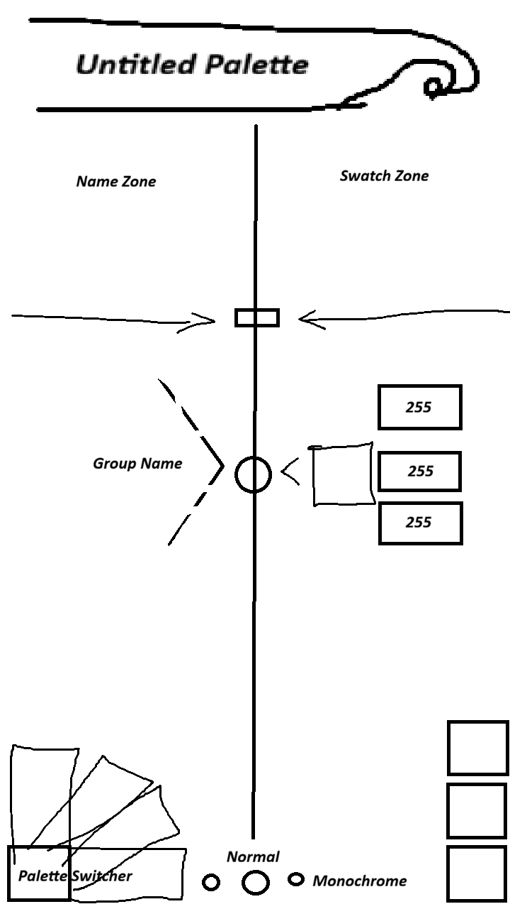
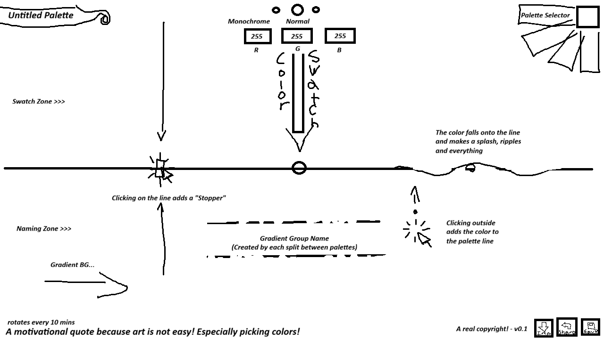

Introduction
Hi this is a color swatch "program" that I wanted to make for a bit, as an artist that also dabbles into the fields of computer science
I feel that it was appropriate to work on an application to help with the color making process as a "free time" task.
Usually colors appear out of the blue in my brain or even at times when im just playing with the color wheel and dropping it onto the canvas.
This is a realization of that idea turning into something a bit more robust and focused towards making the color picking process more fun and just overall enjoyable to play with.
I want the UI to be something that's similar to a bath bomb to serve as a metaphor for the explosive capabilities it has as bursts of color being the life that breathes into a canvas.
Design
The UI will be separated into 2 distinct zones, one being the actual water and the other being the open space to drop the color into, aka Swatch Zone and Name Zone.
Swatch Zone
The swatch zone serves as a way to drop the colors into the black line at the center as the colors begin to mix and blend closely to one another.
This lets the viewer view the changes of the color as it progresses and make educated decisions for changes.
There will also be clear separators that displays the swatches, allowing for quick edits to see the results live in real time.
Naming Zone
The name zone is self-explanatory in that it presents the different zones that the colors reside and ways to describe them;
separators create these splits by allowing more diverse palettes be zoned in between each other that builds the final result of a character palette for example.
(I dabble mostly in character design so grouped colors and explanations help a lot with the designing process).
Interactions
Overall theres a set of options one can interact with that edits the palette to what they desire.
Some of these buttons are visible on demand to reduce clutter and to also let the viewer focus on the colors from a glance, its
important to take a look at what the spectrum provides instead of focusing on one element at a time after all.
Color Swatch(es)
The core functionality of the editor is the adjustment of color swatches; palettes revolve around the use of them frequently,
it only benefits the artist to interact with something that seems familiar to them.
Other focuses also include: the use of adjusting the positions of the swatches - akin to gradient editors - to allow the adjustment of
frequency between colors (typically shown in character references).
Color Swatch Editor
Adjustments need to be made - they need to made in a reserved way to not be super intrusive to the changes being shown
on screen.
The swatch editor will present itself as a small set of text boxes above the swatch zone to allow adjustment in a place that isn't
shifting around due to positioning. Creating muscle memory to hopefully speed up the flow of the tool when authoring colors.
Stopper (Splitter)
At times when building a palette, there are instances that you'd wish to capture the color for later. Stoppers are a visual solution
to the demands of such a request; with a way to split the color between 2 different zones, this opens the door for a sub-palette
within the current palette.
The creation of these splitters must also be simple, by clicking on the line you can add a stopper to your current position.
It serves as a classic way of walling a section of water out with your hand that also works as a wave-stopper in tandem.
Color Drop (Clicks)
The actual 'bath-bomb' reference closely ties into the 'Color Drop', a spawnable color ball that contains the color to add alongside with building the satisfaction towards the process of creating palettes by channeling that inner rascal.
Misc. Buttons
The other buttons around the UI focus on more auxiliary actions.
Tasks such as the export and import of the palette, saving the palette down into a persistent storage
(it will auto save on an interval), and managing the palette itself.
View Mode
The use a view modifier that allows you to view the palette in either a standard color or a monochromatic view (contrast testing). This increases the usability and choices of colors ten-fold by allowing a quick glance at how colors interact with each other and what modifications can be done to adjust them.
Palette Switcher
A palette view that lets you switch between other palettes quickly, I feel this is important to include as sometimes colors come up quickly as a passerby thought or even when taking a glance at something that appeals to you by its presentation.
Motivational Quote
A motivational quote, not just because it fills in empty space, but to also get you going a bit further as the process of picking colors for me is always a daunting task even after years of playing with them.
Palette Name
Naming your palette is important, you need to convey what you want these colors to do and for what purpose they must serve!
Saving & Storage
The saving system is going to be something close to a base64 (a form of encoding) string of text that you can send anywhere and paste into the site with, this lets anyone externally from your control contribute and to also take a peak to the colors you've made.
Art is an open medium and it should personally stay that way, so this encourages the idea of color choices being shared with others that they feel fits within their needs.
Mobile Layout & Responsive Design

For a mobile design I plan to not really change too much other than reposition some elements to increase usability.
The design might be something familiar to a note taking application but with a more color focused twist.
Sadly, the motivational quotes have to go as it they take up too much space and I would need a whole new set of quotes to fit
within the viewport.
Tablets mostly are unchanged as the viewport size is wide enough to carry the weight of the desktop view.
Conclusion
The end product is something that provides something of use towards others seeking to simplify the process of picking colors and to let their brains picture out the color choices that they wish to apply.
There are clickable buttons below that corresponds to specific elements!
